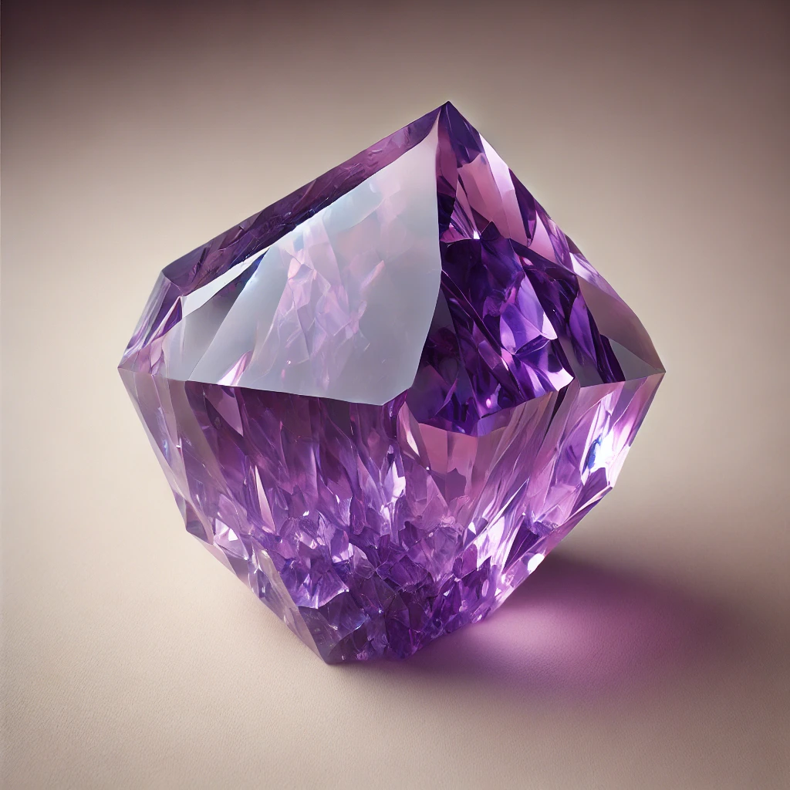
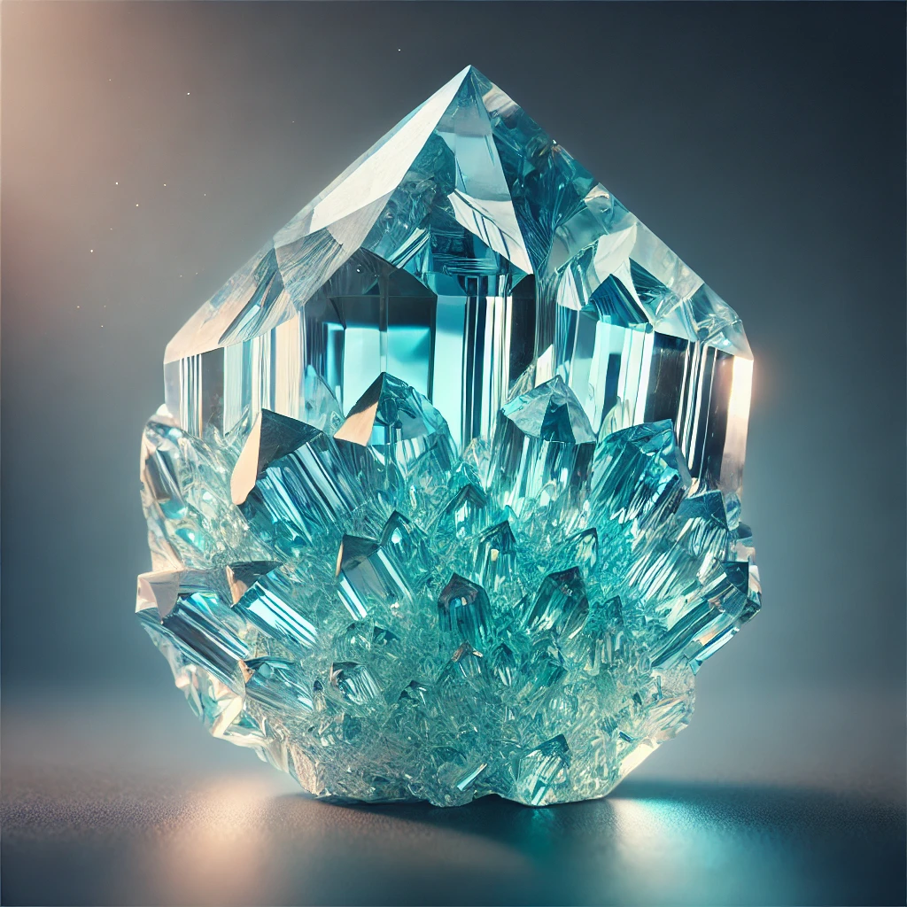
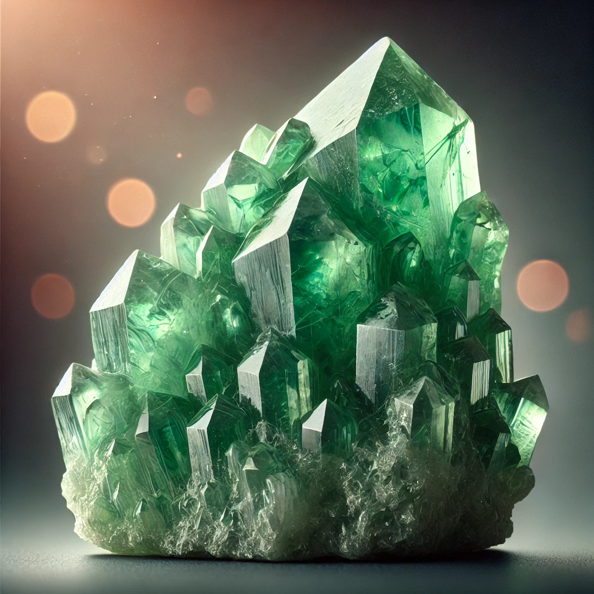
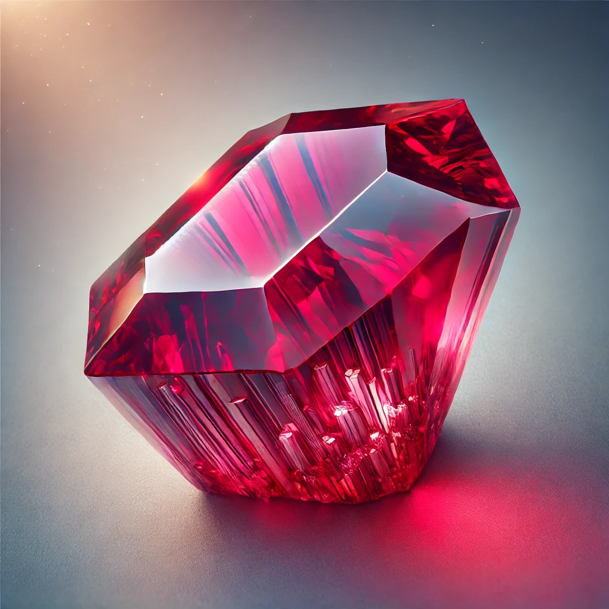
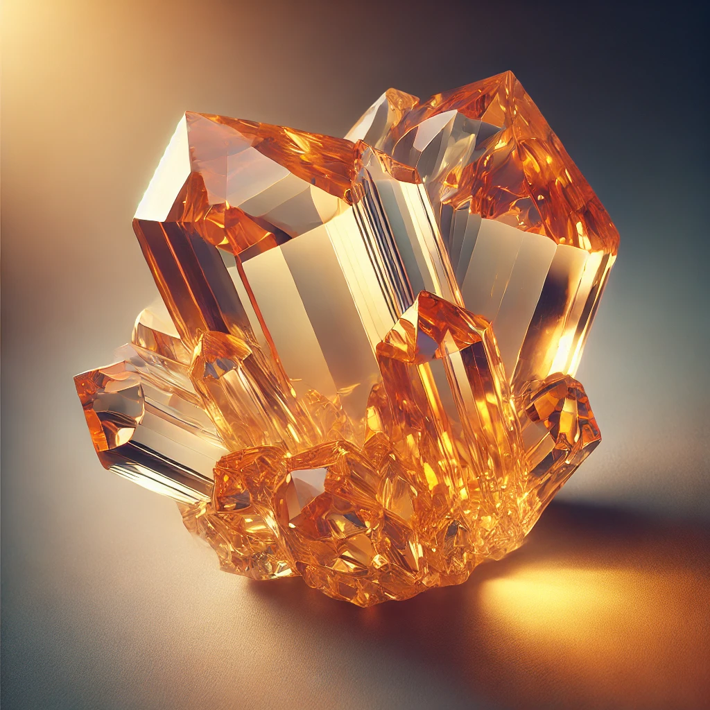
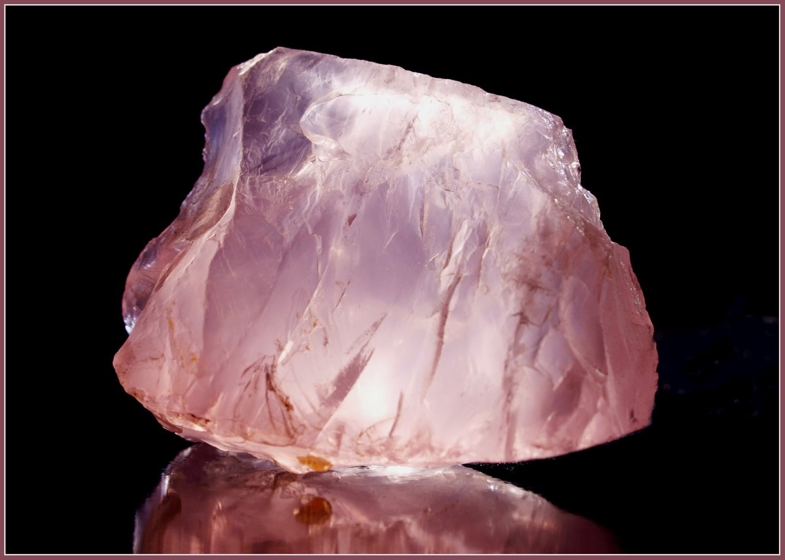

גלי את העוצמה המרפאה של אבני החן והקריסטלים במסורת היהודית
קריסטלים הם אוצרות טבעיים בעלי תכונות אנרגטיות ייחודיות. במסורת היהודית, אבני החושן שימשו ככלים מקודשים בעלי כוחות מיוחדים. כיום, אנו משלבים את החכמה העתיקה עם הבנה מודרנית של האנרגיה והתדרים כדי לסייע בתהליכי ריפוי פיזיים, רגשיים ורוחניים.
"אבני החן הן מתנות מהאדמה, המחברות אותנו לחכמה עתיקה ולכוחות הריפוי של הטבע"

מסייע ברגיעה, הפחתת חרדות, שיפור השינה, חיזוק האינטואיציה והקשר הרוחני.
קשור ל: ספירת כתר וצ'אקרת העין השלישית

מסייע בתקשורת, ביטוי עצמי, שלווה פנימית, חיבור לזרימת החיים.
קשור ל: ספירת חסד וצ'אקרת הגרון

מעודד צמיחה, שפע, מזל טוב, איזון רגשי וריפוי הלב.
קשור ל: ספירת נצח וצ'אקרת הלב

מחזק חיוניות, אומץ, אנרגיה ותשוקה. מסייע בהגנה אנרגטית.
קשור ל: ספירת גבורה וצ'אקרת הבסיס

מושך שפע, ביטחון עצמי, אופטימיות ואנרגיה חיובית.
קשור ל: ספירת תפארת וצ'אקרת מקלעת השמש

מעודד אהבה עצמית, אהבת הזולת, ריפוי פצעים רגשיים והרמוניה ביחסים.
קשור ל: ספירת חסד וצ'אקרת הלב
החזקת קריסטלים במהלך מדיטציה מעצימה את החיבור לאנרגיות המרפאות ומעמיקה את החוויה הרוחנית.
הנחת קריסטלים ספציפיים על אזורי הצ'אקרות השונות מסייעת לאיזון זרימת האנרגיה בגוף.
הנחת קריסטלים בחלל החדר או ענידתם על הגוף מסייעת ביצירת שדה אנרגטי הרמוני ומגן.
קריסטלים מסייעים בהפחתת מתח, חרדה ובהשבת שלווה פנימית
עזרה בשחרור טראומות רגשיות ובניית דפוסי חשיבה חיוביים
העמקת החיבור לעצמי הפנימי ולמימד הרוחני של החיים
יצירת שדה מגן מפני אנרגיות שליליות וסביבה מזיקה